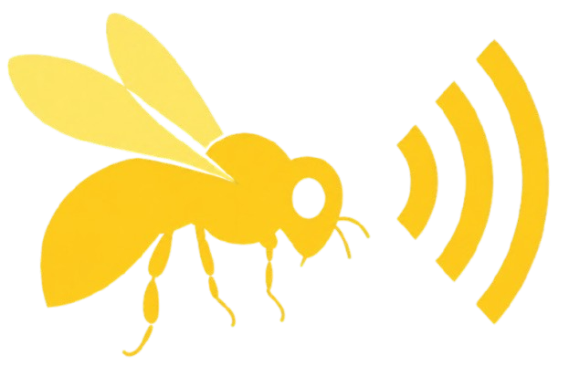
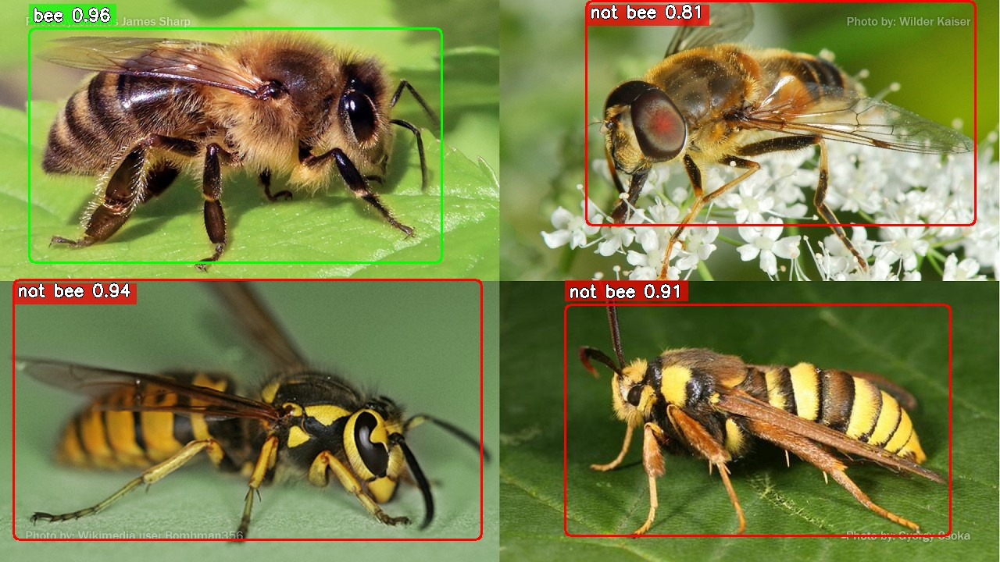
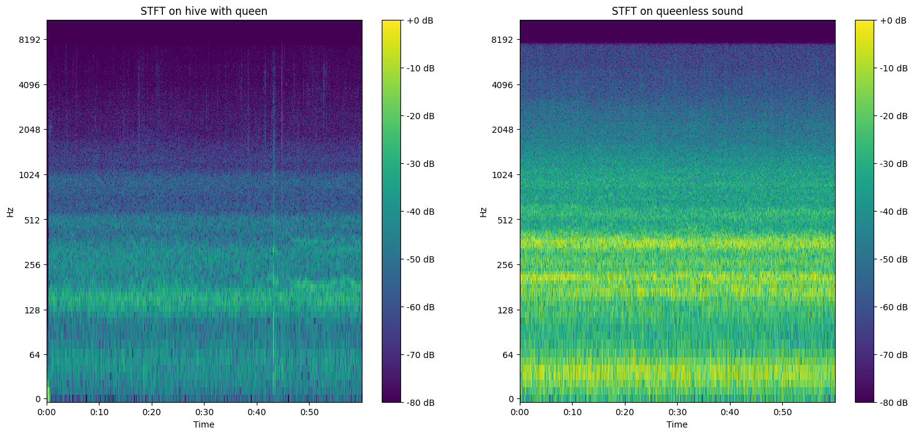
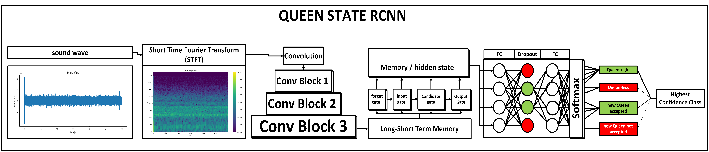
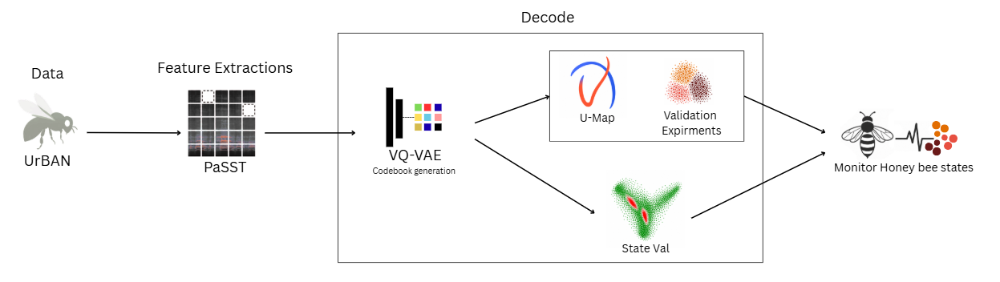
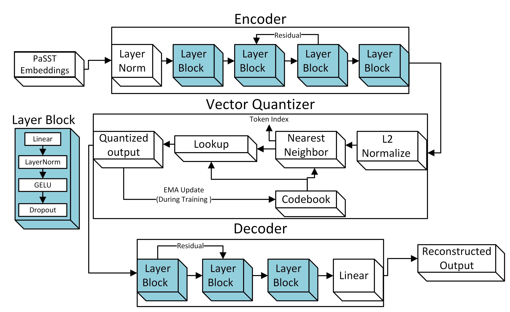
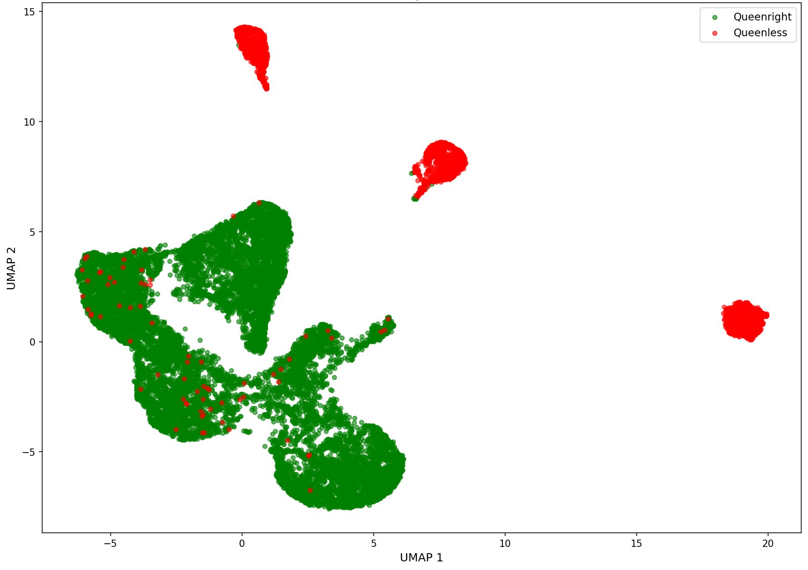
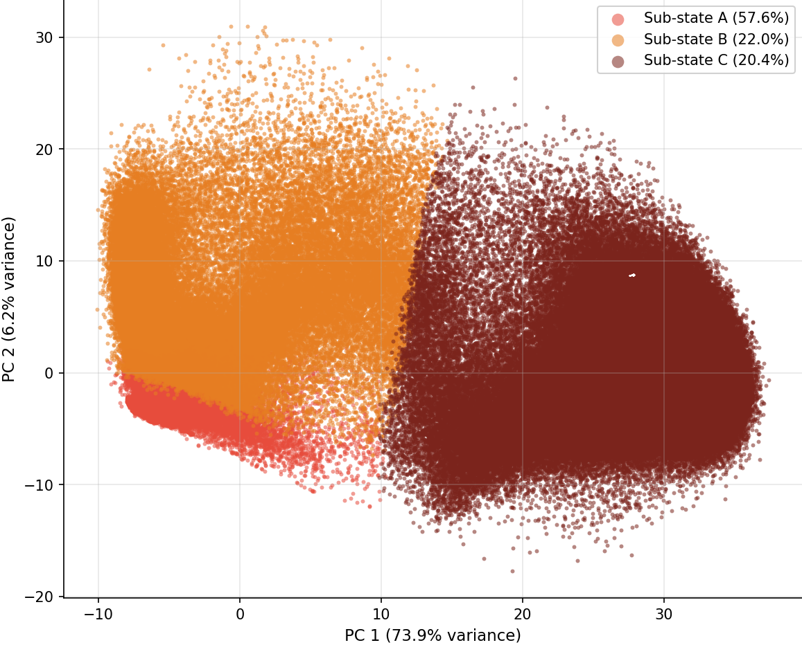
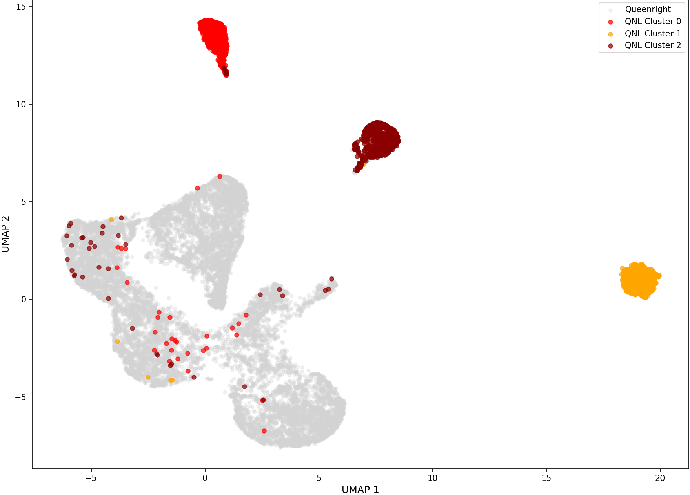
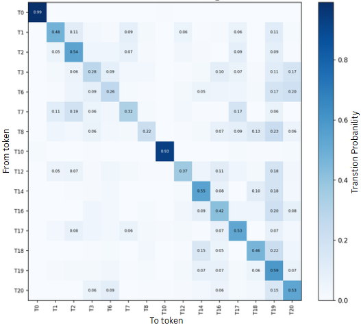

A multi-modal beehive monitoring system for honeybee health and hazard detection, combining predator detection and acoustic analysis.

A VQ-VAE encoder applied to PaSST audio representations for unsupervised acoustic pattern discovery in honeybee recordings. A discrete codebook of learned tokens separates queen-right from queen-less colonies without supervision.
Honeybees are the planet's most critical pollinators, responsible for the majority of crop yields and wild flora. Over the past decade their colonies have seen accelerating decline due to biological threats, environmental stress, and a beekeeping industry still relying on technology from the 1860s.
Colony decline is driven by several compounding threats. The Varroa destructor mite spreads viruses and causes physical deformities that progressively weaken colonies. Invasive hornets and beetles attack bees directly and damage hive structures. When a colony loses its queen, bees exhibit distinct acoustic distress patterns that, without early detection, lead to hive abandonment. These biological pressures are compounded by seasonal stress, with losses peaking in winter when hives are hardest to inspect.
"The Langstroth hive was invented in the 1860s and has remained the standard choice for beekeepers worldwide. Why hasn't this technology advanced?"
While innovations from the same era have long been superseded, beekeeping practice remains a basic wooden box requiring manual inspection and often left entirely unattended. IoT systems, machine learning, and robotics are the natural next step. The absence of automated monitoring means threats go undetected until it is too late for the colony, and beekeepers have no real-time visibility into hive conditions between visits.
BeeBetter combines computer vision and audio classification through three models working together: YOLOv8 for bee and predator detection, VGG-Net for individual bee health classification, and a custom CRNN for queen state detection from hive acoustics. IoT sensors track temperature, CO₂, weight, and air quality, feeding a continuous early-warning system for colony threats.

YOLOv8 correctly identifies the honeybee among four visually similar insects. A wasp, moth, and fly are flagged as impostors despite their yellow-and-black markings.

Short-Time Fourier Transform reveals clear frequency differences between a queen-right and a queen-less colony, forming the input to the CRNN classifier.

Three convolutional blocks extract spectral features from the STFT input, followed by a bidirectional LSTM that captures temporal patterns and outputs a queen state classification.
Since the initial paper the CRNN has been further trained and validated. The video below shows actual real-time queen state detection running on hive audio recordings.
Humans have been listening to bee sounds for over a century. Early attempts to record animal acoustics date to the late 19th century, and a landmark moment came when Karl von Frisch decoded the waggle dance in the 1940s, demonstrating that bee behaviour encodes structured spatial information and earning the Nobel Prize in 1973. Later work by Kirchner (1993) confirmed acoustic communication within hives, and researchers including Ferrari et al. (2008) and Kanelis et al. (2023) identified acoustic correlates for swarming and queen loss using supervised classifiers trained on labelled recordings. BeeBetter's CRNN follows this same direction. The gap is that all prior methods assume labels, predefined conditions, and human annotation. They answer specific questions but cannot discover anything the researcher did not already know to look for.
Honeybee buzzing is not a language. It arises from mechanical muscle vibrations reflecting the collective physiological condition of the colony, not communicative intent. No existing bioacoustic framework applies to it, yet evidence suggests the signal carries structured information about colony health.
BeeVe asks whether repeatable acoustic patterns exist in this signal and whether they can be discovered entirely without supervision. Using PaSST as a frozen audio encoder, a Vector-Quantized Variational Autoencoder is trained on five hours of hive recordings with no labels used at any stage. The result is a discrete codebook, a learned vocabulary of recurring acoustic patterns that emerges purely from data.
UMAP Latent Space
The pipeline begins with the UrBAN dataset, five hours of real-world hive recordings, and passes each file through PaSST, a frozen spectrogram transformer pretrained on AudioSet, to extract 1295-dimensional feature vectors at 23ms intervals. A Vector-Quantized Variational Autoencoder then learns to compress these into a finite codebook of discrete tokens entirely without labels. The resulting vocabulary is decoded and validated post-hoc against known queen status, revealing structured separation without any supervision.

The VQ-VAE is trained using a composite loss consisting of a reconstruction term and a combined quantization term. The outer weight λ = 0.1 ensures the reconstruction term remains the dominant training signal, with quantization kept as a regulariser to prevent the codebook from collapsing in early training. Training proceeds in two phases: for the first ten epochs only the reconstruction loss is active, allowing the encoder and decoder to establish a meaningful representation before quantization is introduced. After epoch 10 the full loss is applied.
No labels are used at any stage of training. The codebook is updated by exponential moving average with decay α = 0.99. A diversity loss encourages uniform utilisation of the codebook through entropy regularisation, preventing codebook collapse. Queen status is used only for post-hoc evaluation.
Acoustic data equivalent to approximately five hours of hive recordings was sampled from the UrBAN dataset. The UrBAN dataset contains well over 1000 hours of honey-bee hive audio collected under real-world conditions. Annotations are used only to ensure that recordings from multiple conditions are represented in the experiment and are not used as labels for training.
Audio is loaded at 22,050 Hz before feature extraction. The model variant passt_s_swa_p16_128_ap476 is used with pretrained weights and no fine-tuning. Timestamp embeddings are extracted at approximately 23 ms intervals, yielding one 1295-dimensional feature vector per frame.

Compresses PaSST embeddings into a 128-dimensional continuous latent representation through five fully connected blocks (1295 → 1024 → 512 → 512 → 128) with LayerNorm, GELU activation, dropout, and a residual connection at the 512 → 512 stage.
Maps the latent representation to the nearest entry in a learned codebook C = {e₁, e₂, …, eₖ}, where K ∈ {32, 64} depending on the experiment. Encoder outputs and codebook entries are L2-normalized before distance computation. Gradients bypass the non-differentiable quantization step via straight-through estimation, and the codebook is updated by EMA with decay α = 0.99.
Reconstructs the original 1295-dimensional space from the quantized representation through four stages (128 → 512 → 512 → 1024 → 1295) with LayerNorm, GELU, dropout, a residual connection at the first stage, and a final linear projection without activation.
Three full-scale experiments were conducted to assess stability across codebook sizes and random seeds. E1 baseline uses five hours of data with a codebook of 64 and seed 0. E1 baseline seed1 repeats the baseline with a different random seed. E2 small codebook uses three hours of data with a codebook of 32.
The UMAP projection shows queenright frames forming a single connected manifold (green) while queenless frames appear as three isolated clusters (red) spatially separated from it, with no label supervision at any stage of training. JSD values range from 0.609 to 0.688 across all experiments, confirming that the two conditions occupy distinctly different regions of the learned token space. The scattered red points within the green mass represent the queenless outliers, below 2% across all experiments, indicating the model can generally differentiate between the two conditions.

2D latent projections coloured by queen status| Experiment | Condition | JSD | Active Tokens | Entropy (bits) | Top Token (%) | Silhouette | QNL Outliers |
|---|---|---|---|---|---|---|---|
| E1 baseline | queenright | 0.609 | 13/64 | 2.042 | 39.04 | 0.046 | 1.57% |
| queenless | 5/64 | 1.134 | 58.00 | ||||
| E1 baseline seed1 | queenright | 0.688 | 13/64 | 2.210 | 27.68 | 0.016 | 1.57% |
| queenless | 6/64 | 1.187 | 56.30 | ||||
| E2 small codebook | queenright | 0.663 | 16/32 | 2.398 | 19.94 | 0.188 | 1.70% |
| queenless | 6/32 | 1.247 | 56.45 |
The PCA projection of queenless-only embeddings reveals three spatially distinct regions corresponding to sub-states A, B and C, confirming that the queenless condition is not acoustically uniform. Sub-state A (57.6%) occupies the left of the PC1 axis, Sub-state B (22.0%) sits in the middle, and Sub-state C (20.4%) extends to the right. PC1 alone captures 73.9% of the variance within the queenless condition. The UMAP projection overlays all embeddings, with queenright in grey and the three queenless sub-states as coloured clusters. Each sub-state forms an isolated region completely separated from the queenright manifold, discovered without any supervision.

PCA projection of queenless embeddings coloured by sub-state
UMAP projection coloured by QNL sub-state assignment| Experiment | Sub-A Size | Dom. Token | Purity | Sub-B Size | Dom. Token | Purity | Sub-C Size | Dom. Token | Purity |
|---|---|---|---|---|---|---|---|---|---|
| E1 baseline | 57.6% | T0 | 97.5% | 22.0% | T10 | 53.6% | 20.4% | T19 | 90.8% |
| E1 baseline seed1 | 57.4% | T1 | 97.9% | 23.0% | T8 | 88.7% | 19.5% | T5 | 73.1% |
| E2 small codebook | 57.1% | T12 | 97.7% | 21.6% | T3 | 89.3% | 21.3% | T11 | 41.9% |
The chi-squared independence test rejects the null hypothesis of token independence at p ≪ 0.001 across all experiments. Outgoing transition entropy averages 2.08–2.42 bits against a maximum possible 3.70–3.91 bits (H/H_max = 0.56–0.65), indicating structured but non-deterministic transitions. Approximately half of all frame-to-frame transitions are self-transitions (51–58%), and when transitions do occur they follow structured pathways rather than distributing randomly across the codebook.

Token transition probability matrix · baseline experiment| Experiment | Active Tokens | Self-transitions | Transition Entropy H (bits) | H/H_max | Chi-squared |
|---|---|---|---|---|---|
| E1 baseline | 15/64 | 51% | 2.35 ± 0.86 | 0.60 | p ≪ 0.001 |
| E1 baseline seed1 | 13/64 | 54% | 2.08 ± 0.74 | 0.56 | p ≪ 0.001 |
| E2 small codebook | 13/32 | 58% | 2.42 ± 0.58 | 0.65 | p ≪ 0.001 |
Interactive 3D latent space, token gallery, real audio playback and transition analysis.